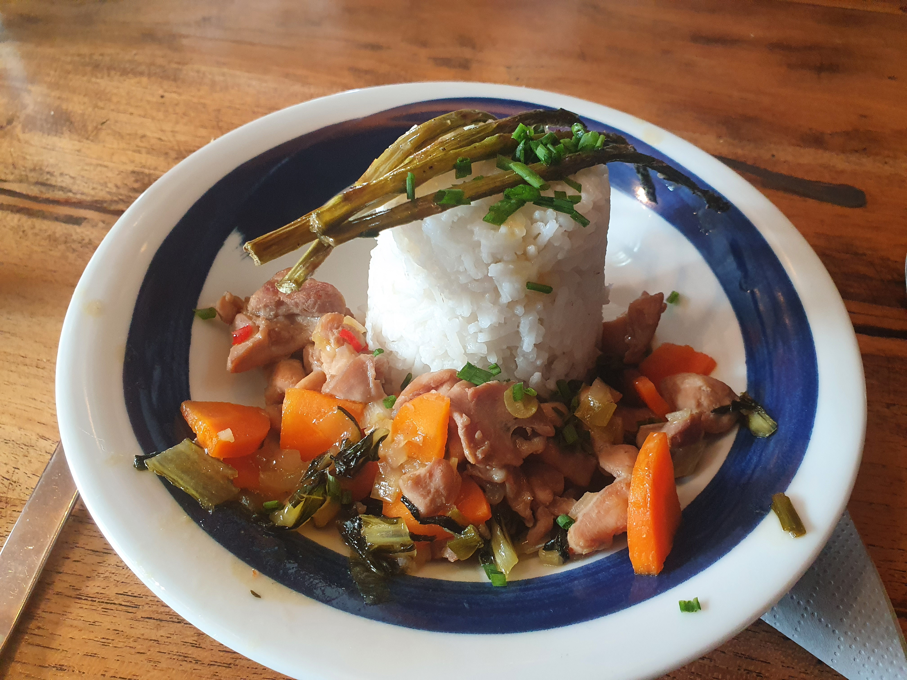

De kookworkshop begonnen met presentaties waarbij iedereen zijn project aan de groep voorstelde om hier meer inzicht in te krijgen. Na deze presentatie werden we ingedeeld in 3 groepen, dit werd gedaan door iedereen een nummer te geven van 1 tot 3. Nadat de groepen waren gevormd was het tijd om een box met ingrediënten te kiezen. hierbij werd niet gezegd of het een voor, hoofd of nagerecht was, dit moest onderling bepaald worden. Voordat we dit deden werdt per groep gekeken wie er ervaring had met koken hieruit kwam dat ik samen met Sophie de meeste ervaring had met koken in mijn groep. Op het moment dat dit bekend was gingen de meest ervaren personen van elke groep met elkaar in overleg over hoe alles het beste verdeeld kon worden. Uiteindelijk kwam hieruit dat wij als groep het hoofdgerecht gingen maken.
Doordat ik samen met Sophie de meeste ervaring had was het aan ons de taak om ervoor te zorgen dat alles optijd af kwam. Ik heb hierbij de mensen aan het werk gezet door te laten zien hoe ze bijvoorbeeld kip moeten snijden. Naast de kip heb ik mij gefocust op de groene asperges(foto 2, links onder), Sophie zorgde dat de saus en groente optijd af waren. Het uieindelijke gerecht(foto 3, onder) was niet waarop ik gehoopt had, het had niet heel veel smaak namelijk. Qua opmaak vond ik het wel een mooi gerecht. De conncectie tussen deze workshop en Smart industrie heeft denk ik te maken met hoe processen in elkaar zitten. In de keuken was het namelijk zo dat de mensen met ervaring de rest mee moeten nemen om tot hetzelfde doel te komen, dit geld ook voor innovatieve projecten binnen een bedrijf. Ervaren personeel zal moeten opstaan en de rest moeten meenemen tijdens het invoeren van een innovatie. Foto 3
Tijdens deze workshop zijn we naar het valkhofmuseum in Nijmegen gegaan. Hierbij ging het om de bedrijfsprocessen in het museam en hoe deze aansluiten dagelijkse processen. Om dit weer te geven werd het voorbeeld gegeven over een van de kunstwerken, daarbij werd verteld dat dit proces overeenkomt met innovatieve processen van bedrijven. Een kunstenaar bedenkt namelijk iets bezonders, iets wat niet zomaar iedereen kan bedenken. Dit creatieve proces komt overeen met het proces dat nodig is om tot een nieuwe innovatie te komen. Om te kunnen innoveren moet je namelijk anders naar dingen gaan kijken dan dat dit voorheen gedaan werdt, alleen zo kunnen bedrijven tot nieuwe technieken komen.
Daarnaast hebben we hier naar de expositie gekeken genaamd: retten der wald! Waarbij het gaat om bewustworden over de menselijke inbreng op klimaatverandering. Hiervoor moesten we eerst naar buiten, hier werden geluiden afgespeeld vanuit een boom. daarbij werd ons gevraagd welke gedachte er bij je opkwam bij het horen van deze geluiden. De gedachte die bij mij opkwam was: de dagelijske sleur die ons afleidt van het probleem: klimaatverandering. Men is tegenwoordig heel druk en vergeet soms wat echt belangrijk is in het leven. Ik vond dit goed aansluiten met Smart Industries omdat het bij deze vorm van industrie ook belangrijk is dat je rekening houdt met externe factoren zoals het milieu. Veel innovaties tegenwoordig zijn ook gericht op het klimaatneutraal maken van processen.